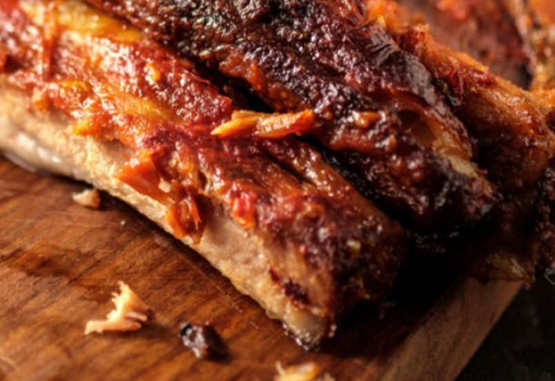
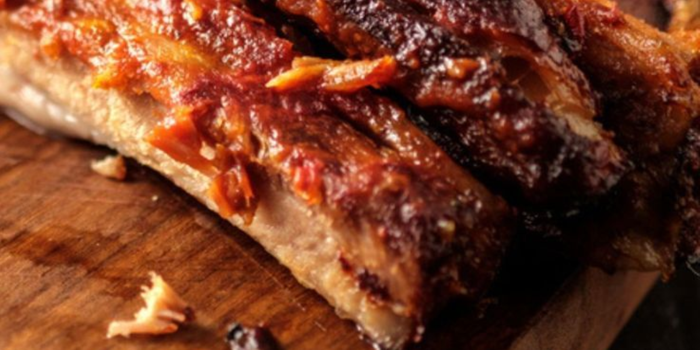

Secondi piatti:
"La cucina siciliana, con i suoi secondi piatti, è un'arte che si tramanda di generazione in generazione. Essi sono una celebrazione della terra e del mare”


secondi piatti tipici: